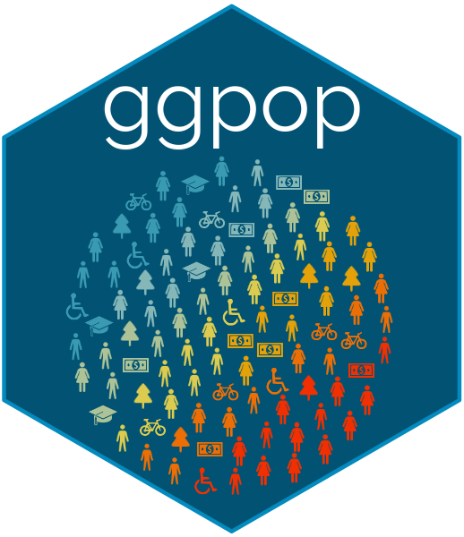

Turn numbers into people. Turn data into stories.
ggpop is an R package built on top of ggplot2 that simplifies the creation of engaging, icon-based population charts. By combining features from ggplot2 and ggimage, ggpop lets users easily visualize population data using proportional, customizable icons arranged in intuitive, circular layouts. The package also includes functionality for adding clear, icon-enhanced captions, which makes charts easier to understand and visually attractive. Designed primarily for visual storytelling, ggpop helps users communicate population statistics in a straightforward and appealing manner.
An Alternative Approach to Visualization
ggpop offers a fresh alternative to traditional data visualizations by using icons and proportional symbols in population charts. This approach not only improves the aesthetics of your plots but also helps your audience better engage with and understand the data. By converting numerical values into intuitive visual representations, ggpop makes complex population data clearer and easier to remember, allowing users to tell more compelling and accessible stories.
Why ggpop?
- Visual Impact: Icons create an immediate emotional connection with your audience.
- Intuitive Understanding: Proportional representation simplifies data.
- Flexible: Support for 2,000+ Font Awesome icons.
-
Fast: Optimized rendering handles up to 1,000 icons smoothly for
geom_pop()and unlimited forgeom_icon_point() - ggplot2 Native: Integrates seamlessly with your existing workflow — themes, facets, scales and all.
Two Main Geoms
ggpop has with two principal geoms. Each solves a different visualization problem:
geom_pop() |
geom_icon_point() |
|
|---|---|---|
| Best for | Population & proportion data | Any x / y scatter data |
| Layout | Circular proportional grid | Free x / y positioning |
| What one icon means | A fixed share of the total population | A single observation |
| Data prep needed | Yes — run process_data() first (optional) |
No — plug in any data directly |
| Think of it as | A pictogram / isotype chart |
geom_point() with icons |
Installation
You can install ggpop from CRAN with:
install.packages("ggpop")Development version of the package can be installed from GitHub with:
install.packages("remotes")
remotes::install_github("jurjoroa/ggpop")
geom_pop() — Population Charts
geom_pop() creates proportional icon grids where each icon represents a share of the total population. Perfect for making demographic, health, or social statistics in a nice format.
1.- Create a Small Dataset or Use a Built-in Dataset
The dataset df_pop_mx is a minimal example illustrating population counts by sex in Mexico in 2024. It has the following structure:
-
sex: A categorical variable indicating the sex (
"male"/"female") - n: A numeric variable representing the population size for each sex category
-
country: A constant value
"Mexico" -
continent: A constant value
"America"
library(dplyr)
library(ggpop)
df_pop_mx <- data.frame(sex = c("male", "female"),
n = c(63459580, 67401427),
country = "Mexico",
continent = "America")| Sex | Population (n) | Country | Continent |
|---|---|---|---|
| Male | 63,459,580 | Mexico | America |
| Female | 67,401,427 | Mexico | America |
2.- Process data
df_pop_mx_prop <- process_data(data = df_pop_mx,
group_var = sex,
sum_var = n,
sample_size = 1000)We apply the process_data() function to the population data df_pop_mx with the following parameters:
- group_var = sex: groups the data by sex (male/female). This is our grouping variable
-
sum_var = n: uses the column
n(population counts) for group totals. This is the variable that will be summed up to calculate proportions. - sample_size = 1000: generates 1,000 sampled records, proportionally allocated to each group. The package allows up to a sample size of 1000.
The function calculates group proportions, then performs sampling to create a new data frame (df_pop_mx_prop). Each row represents one draw from the 1,000 samples. Notable columns:
- type: which group (male or female) was sampled.
- n: total population count of the corresponding group.
- prop: proportion of that group in the overall dataset.
Note:
process_data()is optional. You can pass your own data frame directly togeom_pop()— as long as each row represents one icon. The maximum is 1,000 rows per plot (you can pass more only if you doing per facet group).
3.- Assign icons to groups
Here, we create a new column called icon in the df_pop_mx_prop dataset. The case_when() function checks each row’s type (either “male” or “female”) and assigns a matching value to the icon column.
4.- Icons


This package supports Font Awesome icons.
Font Awesome icons offer greater flexibility and a broader icon set (2,000+ free icons).
The icons are stored in the
fontawesomepackage. The only thing you need to specify is the icon’s name.
For example, here is a small sample of the 2,000+ free icons available:
home · user · envelope · bell · camera · cog · heart · calendar · cart-plus · check · cloud · comment · download · edit · file · filter · flag · folder · phone

You can check the full list of icons at the Font Awesome website.
5.- Plot population chart
Now we can proceed to plot the population chart using the assigned icons.
library(ggplot2)
ggplot() +
geom_pop(data = df_pop_mx_prop, aes(icon = icon, group = type, color = type),
size = 1, arrange = F, legend_icons = F) +
theme_void() +
theme(legend.position = "bottom")
The geom_pop() function creates a population chart using the df_pop_mx_prop dataset. The object works as a geom_point() figure plotted at determined x and y coordinates. We can also group and color the icons by the type variable or the variable we are grouping for.
5.1 Improve the plot
Like any ggplot object, we can layer on themes, colors, titles, and a legend to make the chart presentation-ready.
ggplot(data = df_pop_mx_prop, aes(icon = icon, group = type, color = type)) +
geom_pop(size = 1, arrange = T) +
theme_void(base_size = 40) +
theme(legend.position = "bottom") +
labs(title = "Population in Mexico by Sex",
subtitle = "2024",
caption = "Source: demogmx") +
theme(legend.title = element_blank(),
plot.background = element_blank(),
panel.background = element_blank(),
legend.background = element_blank(),
legend.text = element_text(color = "#D4AF37"),
plot.title = element_text(color = "#D4AF37"),
plot.subtitle = element_text(color = "#D4AF37"),
plot.caption = element_text(color = "#D4AF37")) +
scale_legend_icon(size = 10) +
scale_color_manual(values = c("male" = "#1E88E5", "female" = "#D81B60"),
labels = c("female" = "Females: 51%", "male" = "Males: 49%"))
We can also include more than two icons in the same plot. In this example, we will identify the people that are disabled, and we will change some parameters.
#1.- We load or create the data
df_pop_dis_mx <- data.frame(sex = c("male", "female", "disabled males",
"disabled females"),
value = c(53726732, 54978806, 9731396, 11106712),
country = "Mexico",
continent = "America")
#2.- We process the data
df_pop_dis_mx_prop <- process_data(data = df_pop_dis_mx, group_var = sex,
sum_var = value, sample_size = 500)
#3.- Assign icons to groups
df_pop_dis_mx_prop <- df_pop_dis_mx_prop %>%
mutate(icon = case_when(
type == "male" ~ "male",
type == "female" ~ "female",
type == "disabled males" ~ "wheelchair",
type == "disabled females" ~ "wheelchair"))
#4.- Plot
library(showtext)
font_add_google("Quicksand", "quicksand")
showtext_auto()
ggplot(data = df_pop_dis_mx_prop, aes(icon = icon, group = type, color = type)) +
geom_pop(size = 1.1, arrange = F) +
theme_pop(base_size = 100, base_family = "quicksand") +
scale_legend_icon(size = 10,
legend.text = element_text(color = "#D4AF37",
family = "quicksand"),
plot.title = element_text(color = "#D4AF37",
family = "quicksand",
face = "bold", size = 90,
hjust = 0.5),
plot.subtitle = element_text(color = "#D4AF37",
family = "quicksand",
size = 70, hjust = 0.5),
plot.caption = element_text(color = "#D4AF37",
family = "quicksand",
size = 70, hjust = 0)) +
labs(title = "Population in Mexico by Sex and disability status",
subtitle = "2023",
caption = "As of 2023, 16% of the population in Mexico
has some form of disability.") +
theme(legend.position = "bottom", legend.title = element_blank(),
legend.box.spacing = unit(-.4, "cm"),
legend.margin = margin(t = 0, b = 0),
legend.box.margin = margin(t = 0, b = 0)) +
scale_color_manual(values = c("male" = "#1E88E5", "female" = "#D81B60",
"disabled males" = "#90CAF9",
"disabled females" = "#F48FB1"),
labels = c("male" = "Males", "female" = "Females",
"disabled females" = "Disabled Females",
"disabled males" = "Disabled Males"))
geom_icon_point() — Icon Scatter Plots
geom_icon_point() is the scatter plot cousin of geom_pop(). It works exactly like geom_point() — but swaps dots for Font Awesome icons. No preprocessing required: just pass any data with x and y variables and let the icons do the talking.
This is ideal when you want to add visual identity to individual observations — making your audience immediately recognize what they are looking at, not just where a point sits on a chart.
Key differences from geom_pop()
- No
process_data()step needed — works with raw data - Icons are placed freely at x / y coordinates, not arranged in a grid
- Each icon = one row in your dataset (not a population share)
- Supports mapped icons: different categories can show different icons
Example 1: Diet & Health Outcomes by Food Group
Each point is a food item plotted by its calorie and protein content. Every food gets its own icon — apple, banana, orange, drumstick, bacon, fish, bottle-water, cheese, and jar — while color groups them by category.
library(ggplot2)
library(ggpop)
df_food <- data.frame(
food = c("Apple", "Carrot", "Orange", "Chicken", "Beef", "Salmon",
"Milk", "Cheese", "Yogurt"),
calories = c(52, 41, 47, 165, 250, 208, 61, 402, 59),
protein = c(0.3, 1.1, 0.9, 31, 26, 20, 3.2, 25, 10),
group = c(rep("Fruit", 3), rep("Meat", 3), rep("Dairy", 3)),
icon = c("apple-whole", "carrot", "lemon",
"drumstick-bite", "bacon", "fish",
"bottle-water", "cheese", "jar")
)
ggplot(df_food, aes(x = calories, y = protein, icon = icon, color = food)) +
geom_icon_point(size = 2, dpi = 100) +
scale_color_manual(values = c(
"Apple" = "#FF5252", "Carrot" = "#FFA726", "Orange" = "#FFB74D",
"Chicken" = "#8D6E63", "Beef" = "#6D4C41",
"Salmon" = "#EF5350", "Milk" = "#42A5F5", "Cheese" = "#FFD54F",
"Yogurt" = "#4DB6AC"
)) +
labs(
title = "Calories vs. Protein by Food Group",
subtitle = "Each icon represents a specific food; color reflects the group",
x = "Calories (per 100g)",
y = "Protein (g per 100g)",
color = "Food Group"
)
Example 2: Tech Brand Revenue vs. Market Cap
Each brand gets its own icon and color. Icon size is mapped to number of employees — bigger companies appear larger on the chart, adding a third dimension of information at a glance.
library(ggplot2)
library(ggpop)
df_brand <- data.frame(
brand = c("Apple", "Google", "Microsoft", "Meta", "Amazon",
"Netflix", "Spotify", "Uber", "Airbnb"),
revenue = c(394, 283, 212, 117, 514, 32, 13, 37, 9),
market_cap = c(2950, 1750, 2800, 1200, 1750, 190, 55, 140, 75),
employees = c(160, 180, 220, 86, 1540, 13, 9, 32, 6),
sector = c("Hardware", "Search", "Cloud", "Social", "Commerce",
"Streaming", "Streaming", "Mobility", "Mobility"),
icon = c("apple", "google", "windows", "meta", "amazon",
"tv", "spotify", "uber", "airbnb")
)
df_brand <- scales::rescale(df_brand, to = c(0.8, 2.5))
ggplot(df_brand, aes(x = revenue, y = market_cap,
icon = icon, color = brand, size = size_scaled)) +
geom_icon_point(dpi = 120) +
scale_x_log10(labels = scales::dollar_format(suffix = "B")) +
scale_y_log10(labels = scales::dollar_format(suffix = "B")) +
scale_color_manual(values = c(
"Apple" = "#FF5252", "Google" = "#42A5F5",
"Microsoft" = "#4DB6AC", "Meta" = "#8E24AA",
"Amazon" = "#FFB300", "Netflix" = "#E53935",
"Spotify" = "#1DB954", "Uber" = "#546E7A",
"Airbnb" = "#FF4081")) +
scale_size_continuous(range = c(1, 3), labels = scales::comma) +
labs(
title = "Tech Giants: Revenue vs. Market Cap",
subtitle = "Size = employees (millions) · Log scales",
x = "Annual Revenue (log scale)",
y = "Market Cap (log scale)",
color = "Brand",
size = "Employees (M)"
)
Featured Example: More Spending ≠ Longer Lives
This example shows geom_icon_point() in combination with five other geoms — geom_smooth(), geom_vline(), geom_hline(), geom_text(), and annotate() — to build a fully annotated analytical chart. The icons encode income group visually (hospital for high-income countries, stethoscope for upper-middle, pills for lower-middle and low), geom_text() labels every country directly above its icon with no background, and the trend line, reference lines, and quadrant annotations do the analytical heavy lifting. The result is a chart that is both rigorous and immediately readable.

More Examples: Facets & Other Packages
geom_pop() integrates natively with ggplot2’s faceting system, letting you compare populations across groups or geographies without any extra setup. Just add a facet parameter or a standard facet_wrap() / facet_grid() call, and ggpop handles the rest.
For even more examples, vignettes, and the full function reference, visit the ggpop package website.
facet_wrap() — Transportation Methods Across US Cities
Using facet_wrap(~ group), this chart breaks down the daily commute mix across major US cities. Each panel shows one city’s full distribution of transportation modes — car, bus, train, bicycle, motorcycle, walking, and ride-share — with each icon representing approximately 400 commuters. The dark background and per-mode color coding make it easy to compare cities at a glance.
Code available in ggpop package website.

facet_geo() — Gun Violence Across US States
Combining geom_pop() with the geofacet package places each state’s panel in its actual geographic position on the US map. Here, skull icons represent gun deaths per 100,000 people (2023 CDC data), with each icon equal to 2,000 people. The layout immediately reveals regional patterns that a standard bar chart would hide — Mississippi sits at nearly 8× the rate of Massachusetts, and the South and rural West cluster visually as the hardest-hit regions.
Code available in ggpop package website.